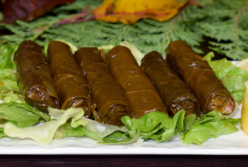

Découvrez nos plats délicieux!
Bienvenue sur notre site, où vous pouvez découvrir les meilleurs plats de la région.
 |
 |
 |
| Caviar d'aubergine | Fattouche | Feuilles de vigne |
| Ingrédients : Aubergine grillée, sauce sésame, fromage blanc et de l'huile d'olive. Fait Maison | Ingrédients : Salade, tomate, concombre, fromage, pin frite, citron et de l'huile d'olive. Fait Maison | Ingrédients : Feuilles de vigne, riz, menthe, persil, tomate, oignon, citron et de l'huile d'olive. Fait Maison |
| 50 dh | 60 dh | 80 dh |